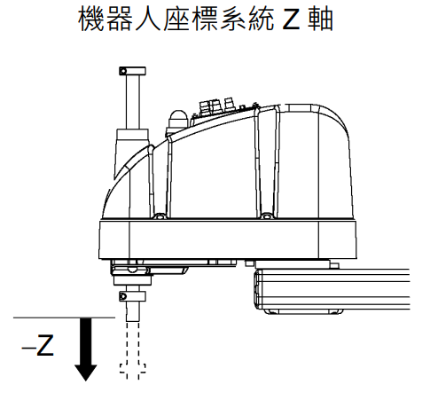
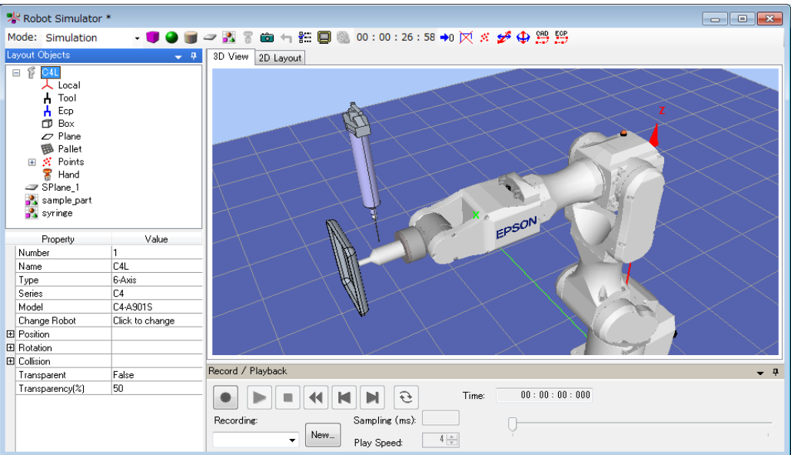
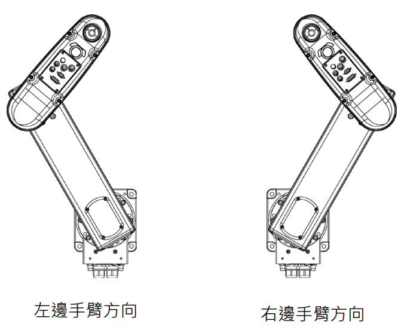
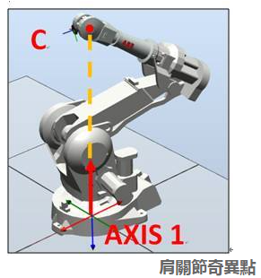
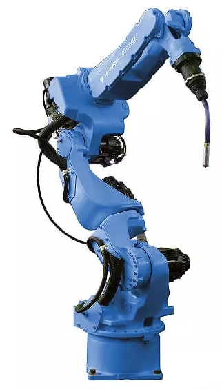
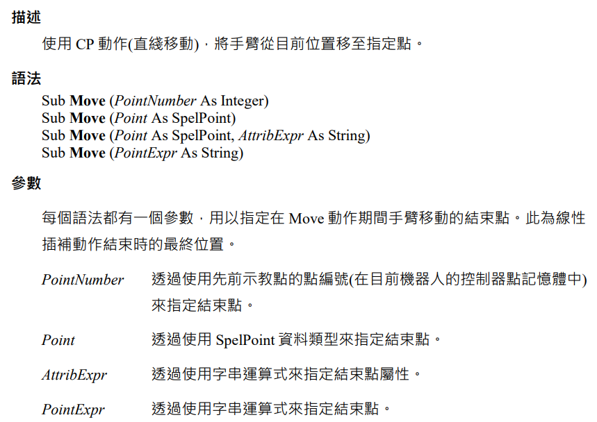
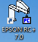
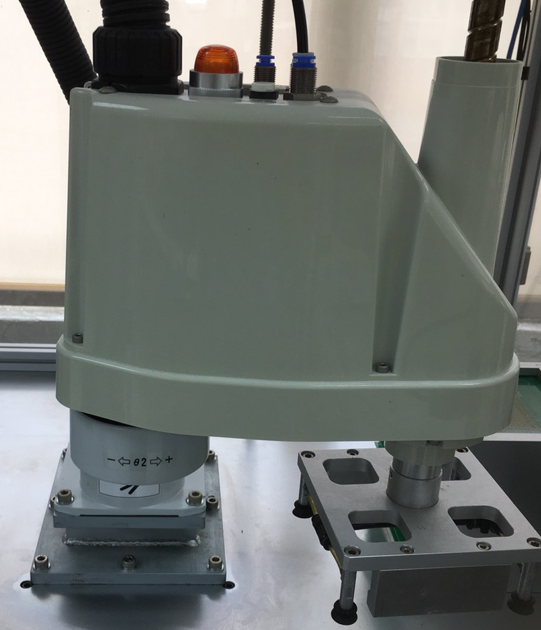
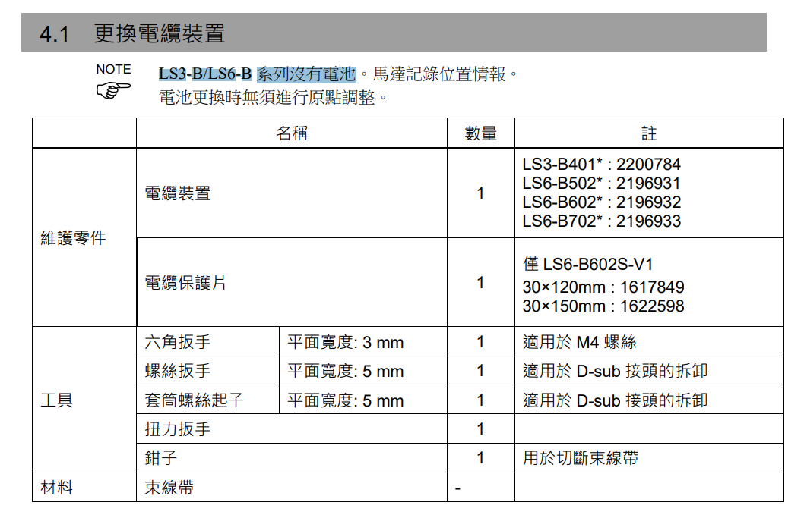
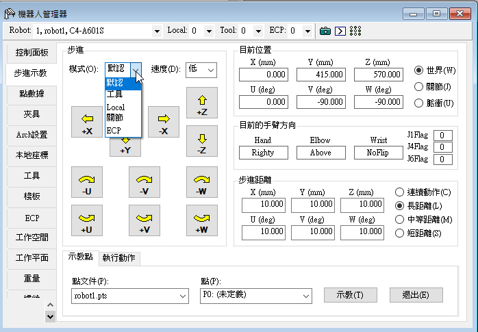

五股職訓局
機電AI_115-1期（作者：Rido老師）Epson 機械手臂自動化整合實戰
SCARA LS3 實務・SPEL+ 程式語言・順逆運動學解算・奇點避障・C# 視覺取放
全面涵蓋全球工業界市佔極高的 Epson SCARA / 6 軸機械手臂！深入探討 Epson RC+ 軟體開發環境、SPEL+ 核心運動語法（Jump、Go、Move、Arc）、點位教導與速度加減速規劃；由淺入深解析機器人學核心——順向運動學 (Forward Kinematics) 與 逆向運動學 (Inverse Kinematics) 幾何與矩陣解算；剖析機械手臂「奇點 (Singularity)」的數學本質與避障策略；並結合 C# PC-Based 視覺取放整合，掌握現代智慧工廠高精度取放作業！
五大工業機器人機構形態與全球四大廠 (Big Four)
工業機器人依機構剛性、自由度與工作空間分為五大基本形態：
- 單軸機器人 (Single-Axis)：滾珠螺桿或皮帶驅動之基礎線性模組。
- 笛卡兒直角坐標 (Cartesian/Gantry)：正交 X-Y-Z 軸，運動學直觀，負載大且行程容易擴展。
- 水平多關節 SCARA：垂直 Z 軸高剛性、水平 X-Y 平面具順應性微調，速度極快，為 3C 組裝霸主。
- 並聯機器人 (DELTA / Spider)：驅動源在頂座，連桿極致輕量化，加速度達 10G~15G，專注食品醫藥高速挑揀。
- 垂直多關節 (Articulated 6-Axis)：擬人手臂 6 自由度，空間姿態最靈活，應用於汽車焊接、噴塗與大型搬運。
 全球四大工業機器人巨頭 (ABB、發那科 FANUC、安川 YASKAWA、庫卡 KUKA) 與 SCARA 霸主 Epson
全球四大工業機器人巨頭 (ABB、發那科 FANUC、安川 YASKAWA、庫卡 KUKA) 與 SCARA 霸主 Epson
Epson C4 6軸手臂 3D 模擬器 & G-Code / SPEL+ 軌跡工作台
支援 2D 畫布自由塗膠 / 三點圓弧軌跡繪製、自動逆向解算運動學、生成標準 G-Code 與 Epson SPEL+ 程式碼，並在 3D 空間中以 Three.js 即時模擬 Epson C4 六軸手臂各關節聯動與走刀路徑！
Epson 手臂與 SPEL+
RC+ 軟體架構、SPEL+ 核心語法、I/O 控制與伺服馬達安全互鎖機制。
C# 整合專案開發
PC-Based 集中控制、TCP/IP Ethernet 封包通訊、相機視覺辨識取放。
Epson LS3 手臂實務
LS3 規格參數、點位教導、Jump 門型動作、加減速設定與輸送帶追隨。
順逆運動學解析
順向運動學 (FK) 關節角轉座標、逆向運動學 (IK) 座標反求多解幾何解算。
手臂奇點成因與避障
雅可比矩陣 Det(J)=0、腕部/肩部/邊界奇點分析、關節超速警報防護策略。
實作小工具：SCARA 雙關節順向運動學 (FK) 即時幾何試算器
SCARA 手臂的大臂長度為 \(L_1\)，小臂長度為 \(L_2\)。輸入當前 J1 (\(\theta_1\)) 與 J2 (\(\theta_2\)) 關節角度，利用三角幾何立即計算出末端工具在水平面上的精準 \((X, Y)\) 座標與工作半徑：
SCARA 順向運動學即時座標試算 (L1, L2, θ1, θ2)
點擊上方按鈕計算 SCARA 末端座標...
SPEL+ 常用運動語法產生器 (Jump / Go / Move / Arc)
在 Epson RC+ 開發環境中，Jump (門型跳躍) 是 SCARA 最省時、最具代表性的取放動作；Move (直線插補) 則常用於塗膠與精密插入。選擇所需工件點位與動作，即時組裝合規的 SPEL+ 代碼：
SPEL+ 運動程式碼即時組裝
SPEL+ 代碼即時預覽...
PTP (點到點運動) vs CP (連續路徑運動) 深度對比 (Slide 67~75)
SPEL+ Motion Architecture| 運動類別 | 代表指令 | 末端軌跡特性 | 工程適用場景 |
|---|---|---|---|
| PTP (點到點) | Go, Jump, BGo |
各關節同時啟動、以最快速度各自到位；末端在空間中不是直線（為弧線或門形拱弧） | 一般快速搬運、晶圓取放、料盒堆疊 (高速無障礙空間) |
| CP (連續軌跡) | Move, Arc, Curve |
末端工具嚴格沿著直線、圓弧或平滑空間曲線行進，速度受控 | 自動塗膠、超音波焊接、狹窄孔位垂直裝配、去毛邊拋光 |
| 停駐 / 歸零 | Home, HomeSet |
將手臂各關節安全收攏，移動至工程師指定的安全待命停駐點 (Park Position) | 換線待機、緊急復歸、產線停機維護位置 |
 CP 直線插補運動：維持末端工具恆定切線速度與姿態
CP 直線插補運動：維持末端工具恆定切線速度與姿態
座標系統深論：多重座標系 (World/Joint/Tool/Local) 與外部控制點 (ECP) 點膠應用
在工業應用中，不同的工序必須使用最適配的參考坐標系。Epson RC+ 支援完整的座標轉換體系，特別是高階外部控制點 (ECP) 更是解決異形工件精密點膠與打磨的關鍵利器：
Base/World 原生座標 vs Tool 工具座標系

SCARA: X, Y, Z 平移 + U 旋轉 6-Axis: X,Y,Z + 姿態角 Roll,Pitch,Yaw
6-Axis: X,Y,Z + 姿態角 Roll,Pitch,Yaw
- World 座標系：以手臂本體基座中心為原點 $(0,0,0)$，為全域絕對空間參考點。
- Joint 關節座標系：直接讀取與控制各伺服馬達轉角 $(\text{deg})$ 或螺桿行程 $(\text{mm})$。
- Tool 工具座標系：原點設在手臂末端夾爪或吸盤尖端 (TCP)。當工具傾斜時，沿 Tool Z 軸推進即可實現「直進直退」。
- Local 局部座標系：為傾斜擺放的料盤建立獨立參考系，只需定義原點、X軸與Y軸，程式碼即可免改座標直接套用！
ECP (外部控制點) 與高階點膠應用 (Slide 17, 79~89)
 ECP 概念：工具固定於桌台・工件在手臂移動
ECP 概念：工具固定於桌台・工件在手臂移動

工件繞固定注射筒針尖走連續圓弧軌跡傳統方式 vs ECP 外部控制點方式：
- 傳統模式：點膠閥裝在手臂末端隨機台移動，工件固定在工作台。缺點是膠閥與供膠管線晃動拉扯，容易斷膠且重量負載大。
- ECP 模式 (外部控制點)：點膠閥固定於工作台上，機械手臂夾持工件移動去接觸針尖！
- 透過
ECPSet 1, x, y, z, u, v, w定義外部固定針尖為 ECP 原點，後續指令直接以Move P1 /ECP 1走直線或Arc P2, P3 /ECP 1走圓弧，工件表面相對於固定針尖保持恆定線速度與切線方向，徹底解決 3D 異形外殼點膠痛點！
運動學核心：順逆運動學 (FK/IK)、手臂姿態 (Righty/Lefty) 與三大奇點 (Singularity) 避障
機械手臂在空間中的運動本質是幾何與矩陣運算。深入理解姿態旗標 (Orientation) 與奇異點 (Singularity) 是預防產線撞機、伺服過載跳脫與軌跡畸變的必備核心能力：
順逆運動學與 SCARA 姿態旗標 (/R vs /L)

SCARA 手臂姿態旗標：右手方向 (/R Righty) vs 左手方向 (/L Lefty)| 比較項目 | 順向運動學 (FK) | 逆向運動學 (IK) |
|---|---|---|
| 已知條件 | 各關節轉角 \((\theta_1, \theta_2, \dots)\) | 目標座標 \((X, Y, Z, U)\) |
| 解的特性 | 唯一解（角度確定則位置必唯一） | 多解性或無解（通常有 2 組解） |
手臂姿態旗標重要性：當指定末端到達 $(X,Y)$ 時，手臂可以「關節向右凸出 (/R)」或「關節向左凸出 (/L)」兩種姿態到達。在點位中必須精確指定姿態（如 P1 = XY(200, 150, -20, 0) /R），避免手臂在運動過程中為了切換姿態而與側邊機構發生干涉碰撞！
6 軸機械手臂三大奇異點 (Singularity)
 1. 腕關節奇點 (J4與J6共線)
1. 腕關節奇點 (J4與J6共線)

2. 肩關節奇點 (腕在J1旋轉軸上) 3. 肘關節奇點 (手臂拉伸至全平)
3. 肘關節奇點 (手臂拉伸至全平)
數學本質：雅可比矩陣奇異（$\det(J) = 0$）。
- 腕關節奇異點：第 4 軸與第 6 軸同軸共線（第 5 軸角度為 $0^\circ$），末端微小旋轉要求 4、6 軸以無窮大角速度逆向旋轉！
- 肩關節奇異點：手腕中心點剛好落在第 1 軸旋轉中心軸線上，手臂失去向側面平移的能力。
- 肘關節奇異點：手臂完全伸直（大臂與小臂夾角 $180^\circ$）或完全折疊，到達機械工作半徑邊界。
工業避奇點兩大主流策略
- 策略一：修改運動指令為關節插補 (Move ➔ Go / MoveJ)
直線插補 (Move/MoveL) 在穿越奇點時會因關節速度發散而劇烈震動並停機；改用關節空間插補 (Go/MoveJ) 讓各軸馬達按自身角度平滑旋轉，即可無縫穿越奇點區域！ - 策略二：導入七軸冗餘機器人 (7-Axis Redundant Robot)
如 Yaskawa SIA 系列七軸手臂。在傳統 6 軸基礎上額外增加第 7 個旋轉關節，使機構擁有多餘的自由度（Null Space）。機械手臂可在保持末端工具中心點 (TCP) 空間位置與姿態完全不動的前提下，自由擺動手肘 (Arm Angle) 避開障礙物與內部奇異點！

七軸冗餘手臂 (Redundant Robot)：增加 1 軸自由度，徹底消除奇異點拘束PC-Based 二次開發：C# 透過 RCAPINet.dll 集中控制 Epson 機械手臂
在現代智慧自動化產線中，上位工控機 (IPC) 通常以 C# 整合工業相機視覺、MES 製造系統與 Epson 機械手臂。Epson 官方提供 RCAPINet.dll (.NET API)，讓開發者直接在 Visual Studio C# 中呼叫底層 RC+ 伺服器核心：
專案建置與 RCAPINet.dll 引用 (Slide 3~6)
 加入參考：Windows GAC 或 RC+ 安裝路徑下的 RCAPINet.dll
加入參考：Windows GAC 或 RC+ 安裝路徑下的 RCAPINet.dll
建立 Windows Forms App (.NET Framework)，在專案中加入 RCAPINet.dll 參考。核心控制物件為 Spel 類別，封裝了所有底層通訊與運動命令：
using RCAPINet;
private Spel m_spel;
private void Form1_Load(object sender, EventArgs e) {
m_spel = new Spel();
m_spel.ServerWinHandle = this.Handle.ToInt32();
m_spel.Initialize(); // 初始化 EPSON RC+ 伺服器程序
// 載入 RC+ 專案
m_spel.Project = @"C:\EpsonRC70\Projects\VisualPick\VisualPick.sprj";
// 開啟伺服激磁並切換至高功率 (High Power)
m_spel.MotorsOn = true;
m_spel.PowerHigh = true;
}
Spel 核心運動方法與 GetRobotPos (Slide 6~14)

Spel 類別方法與參數 GetRobotPos 即時讀取座標
GetRobotPos 即時讀取座標
// 1. 點對點與直線運動
m_spel.Go("P1"); // PTP 運動至 P1
m_spel.Move("P2"); // 線性插補直線運動至 P2
m_spel.Jump("P3"); // 門型動作取放至 P3
// 2. 相對移動：JTran (相對關節) / PTran (相對空間點)
m_spel.JTran(1, 15.0f); // 第 1 關節相對轉動 +15 度
m_spel.PTran(10.0f, 0, -5.0f, 0); // X+10mm, Z-5mm 相對位移
// 3. 即時讀取目前末端空間座標與姿態
SpelPoint curPos = m_spel.GetRobotPos(SpelRobotPosType.World);
Console.WriteLine($"目前座標: X={curPos.X}, Y={curPos.Y}, Z={curPos.Z}, U={curPos.U}");
立即 vs 非同步模式 (AsyncMode) 與例外排查 (Slide 9, 23)

SpelException：Error 1808 未安裝選項 / Error 10007 項目不存在- 立即方法 (Immediate)：如所有 I/O 命令（
m_spel.On(1),m_spel.Off(1),m_spel.Sw(1)），控制器執行後立即傳回結果，無等待延遲。 - 非同步方法 (Asynchronous)：所有運動命令（
Go,Move,Jump）。Spel 類別發出命令後，會自動在背景處理 Windows Message Dispatch，讓 UI 介面維持回應，使用者隨時能按「急停」按鈕！ - AsyncMode 控制：若設
m_spel.AsyncMode = true;，呼叫動作會立刻返回，主程式可透過m_spel.WaitCommandComplete();輪詢或透過EventReceived事件監聽完成通知。 - 常規實戰異常排查：
- Error 1808 (未安裝 USB 驅動器)：尚未連接實體 USB 控制器時跳出。解法：在 EPSON RC+ 7.0 點選「連線 ➔ 連接虛擬控制器 (Virtual Controller)」即可本機全功能模擬！
- Error 10007 (項目不存在)：專案路徑不正確或點位名稱未宣告。解法：檢查
m_spel.Project是否指向真實存在的.sprj檔案，或點位檔中已示教該目標點。
機台實務與維護：Epson LS3-401S 實機上線 5 大 SOP、RC90 控制器與無電池馬達革命
在工廠自動化現場，機械手臂的硬體保養與控制器配線決定了產線的稼動率 (OEE)。本節彙整職訓教室與工廠最常見的 Epson LS3-401S + RC90 系統 維護要訣：
RC90 工業控制器與 LS3-401S 規格 (Slide 16~19)
 Epson RC90 工業控制器
Epson RC90 工業控制器

LS3-401S SCARA 手臂實體- LS3-401S 規格：第一臂 225mm + 第二臂 175mm = 總工作半徑 400 mm；最大額定負載 3 kg；Z 軸升降行程 150 mm；重複定位精度高達 ±0.01 mm。
- 通訊介面：前面板配備 USB 埠（免密碼即插即用，供現場工程師筆電示教調試）；後背板配備 100BASE-TX 工業乙太網埠（與 PLC、PC 上位機通訊）與標準 24 點光隔離 I/O。
電池維護 vs 新一代 LS-B 無電池馬達技術 (Slide 22~27)
 傳統機型：定期更換 3.6V 鋰電池
傳統機型：定期更換 3.6V 鋰電池

LS-B 新機型：無電池馬達永久記憶- 傳統機型維護痛點：控制器與手臂關節內建鋰電池（如 ER17500V 3.6V / CR17335SE 3V）。電池壽命約 2~3 年，若電池電量耗盡且斷電，絕對型編碼器的多圈圈數將永久丟失，開機後報警且必須耗費數小時重新執行原點校正 (Calibration)！
- 新一代 LS3-B / LS6-B 技術革命：全機馬達採用「無電池式絕對型編碼器 (Battery-less Absolute Encoder)」！馬達內部利用磁阻效應齒輪永久記錄圈數與位置情報，終身免更換電池、終身免除斷電原點丟失風險，大幅降低維護成本與產線無預警停機！
機台導入與調試 5 大標準上線流程 SOP (Slide 2~15, 33~41)
Epson Robot Commissioning SOP開啟 RC+ 進行全機備份 (Project Backup)，儲存所有點位檔 (.pts)、系統組態與校正數據，以防意外覆蓋。
透過前置 USB 連接（免密碼，維修便利）或後置 Ethernet 乙太網（設定靜態 IP，與 PLC/IPC 整合）。
檢測急停開關 (E-Stop)、安全門互鎖 (Safety Door)、氣壓缸訊號與控制器狀態自我診斷。
透過 Robot Manager 步進示教視窗，在 Joint、World、Tool 模式下微調手臂並 Teach 儲存點位。
編寫 SPEL+ 運動程式，透過運行視窗與 3D 模擬器 (Simulator) 預先驗證避免空間干涉！

Step 4: EPSON RC+ 7.0 Robot Manager 步進示教視窗 (寸動與座標存取) Step 5: 運行視窗與 3D 實體模擬器 (Simulator) 軌跡干涉校驗
Step 5: 運行視窗與 3D 實體模擬器 (Simulator) 軌跡干涉校驗
Epson 手臂互動工具箱：逆向運動學 (IK) 角度解算器與奇點檢測
輸入目標工作點 $(X, Y)$ 與大臂小臂長度，即時解算出對應的右手系 (/R) 與 左手系 (/L) 兩組關節轉角 $(\theta_1, \theta_2)$，並具備工作半徑極限與奇異點防呆檢測：
SCARA 逆向運動學 (IK) 即時角度解算器 (右手系 vs 左手系)
逆向運動學解算中...